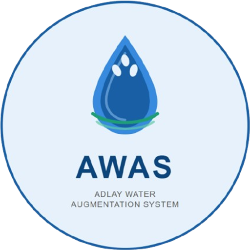

You're offline
AWAS can't reach the internet right now. This page will open by itself when your connection comes back. Pages you opened before on this device are listed below.
Waiting for the internet…

AWAS can't reach the internet right now. This page will open by itself when your connection comes back. Pages you opened before on this device are listed below.